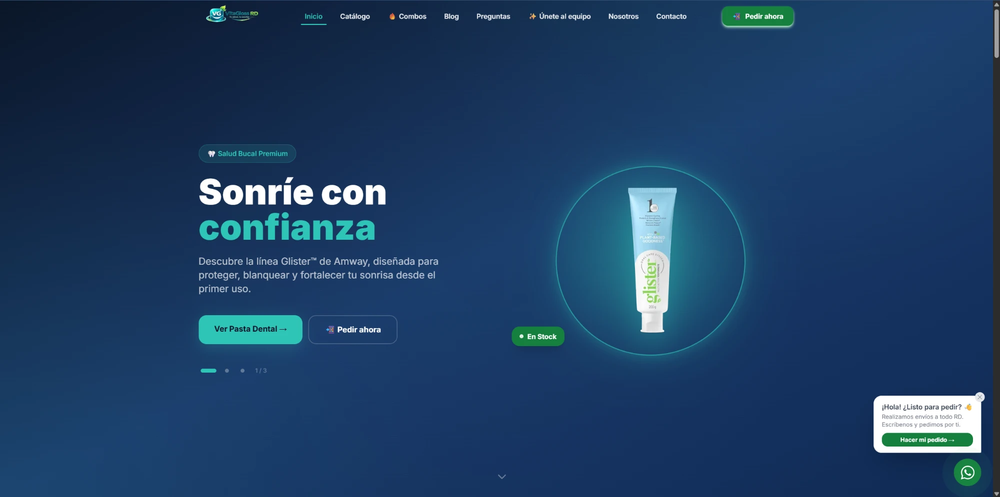
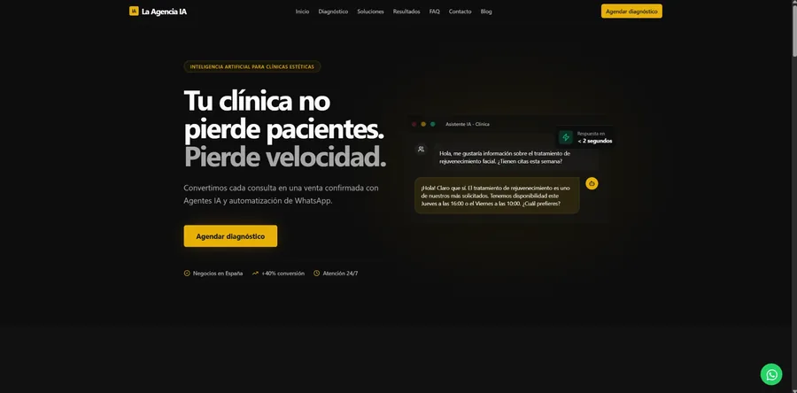
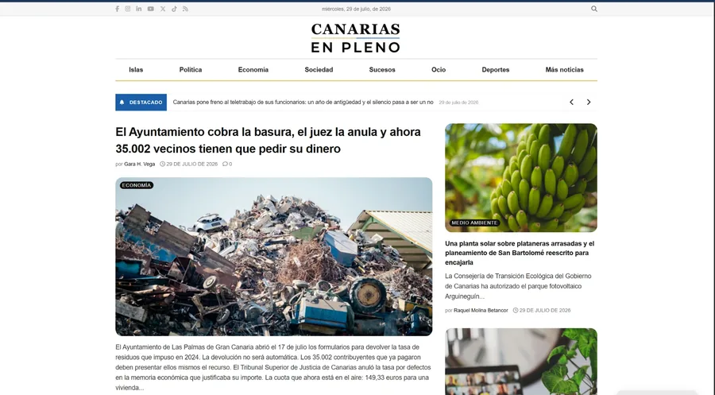

Data-driven diagnosis, not a checklist
The 4F Method: I cross-reference Search Console, GA4, Semrush, and your CMS before recommending anything. Zero assumptions.
Technical SEO · Meta Business Suite · Measurement
I audit Google Search Console, GA4, Semrush, and your CMS to tell you exactly which pages are losing rankings, why, and what to do first — with a prioritized plan, not a list of 40 generic recommendations.
The 4F Method: I cross-reference Search Console, GA4, Semrush, and your CMS before recommending anything. Zero assumptions.
Organized into quick wins (0–30 days), consolidation (30–60), and ongoing monitoring — you know exactly what to do first.
I don't hand you a PDF for another agency to execute. I build, publish, and measure the change myself.
My own methodology: cross-referencing 4 independent data sources before recommending anything. The same 5-step process already applied in the success stories below.
Connect to Search Console, GA4, and Semrush. We define target keywords and pages together. (Days 1–2)
Keyword performance, indexing status, technical Site Audit, source code and schema review. (Days 3–10)
Findings and action plan across 3 time horizons, delivered on a call — not just by email. (Days 11–14)
I execute the plan directly: on-page, technical, internal linking, and content. Monthly.
Same measurement methodology, compared directly against the starting point.
Beyond SEO, I configure the technical foundation a company needs before investing in Facebook and Instagram campaigns.
Business organization, Facebook and Instagram connections, permissions, and advertising account in one centralized environment.
Measurement foundation implementation so future campaigns can record activity and optimize from reliable data.
Catalog configuration to connect the brand's products with Meta campaigns and commerce formats.

Business Manager, Facebook and Instagram, advertising account, pixel, and product catalog configuration integrated with the brand's digital ecosystem.
View full case study
Complete technical SEO optimization: metadata, sitemap.xml, an llms.txt file for AI crawlers, PageSpeed Insights improvements, a navigation menu (there wasn't one), and an independent blog with original articles. Site built on GoHighLevel.
View Full Case Study
Complete SEO audit (Google Search Console, GA4, Yoast SEO, and Semrush) for a media outlet: indexing diagnosis, keyword cannibalization, and a prioritized action plan across quick wins, consolidation, and monitoring.
View Full Case StudyQuick wins can move in 2–4 weeks; the bulk of ranking improvements are measured at 90 days. Anyone promising "results in 7 days" isn't being honest with you.
No. The audit is a complete deliverable on its own. Implementation is an option for those who'd rather have me execute it instead of doing it with their internal team.
Yes — including platforms with no direct code access, where technical SEO gets solved through platform configuration (as in the La Agencia IA case, built on GoHighLevel).
I can include an audit of your existing Ads account to identify wasted budget. Full campaign management is available separately — ask me about your case.
15 minutes on WhatsApp or a call to find out if your case warrants a full audit — free, no obligation.